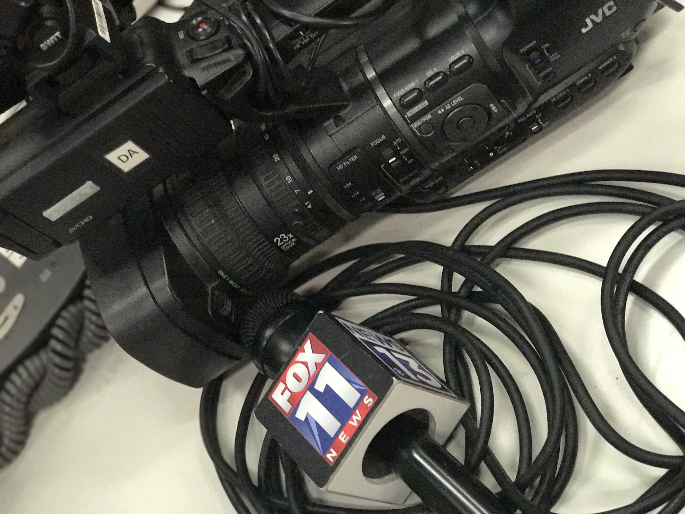

ON-CAMERA SAMPLE
SELECTED WORK / CREATIVE & PROFESSIONAL
The thinking.
The making.
The actual work.
Content leadership, digital marketing, journalism, and the creative work I love getting my hands into.
01
Content that helps
SVP WORLDWIDE / CURRENT WORK
Content that helps
creativity happen.
CREATIVATE™
Digital Content Manager
2024–present
I connect content planning with the digital experience, helping people discover what they can learn and create.
My work includes editorial planning, website messaging, and stakeholder coordination across sewing, quilting, embroidery, and garment content. I partner across product, marketing, and engineering to bring those pieces together.
A closer look at my responsibilities
- Align content with product launches and membership messaging.
- Coordinate editorial priorities and content workflows across teams.
- Plan approachable sewing learning and project experiences for beginners.
- Support consistent messaging and content discovery across digital touchpoints.
02
My work at
VB COSMETICS / DIGITAL & SOCIAL MARKETING
My work at
Dazzle Dry.
Product launch photography, video I created, shot, and edited, and the social channel results reported in my work presentation.
2.75%
Instagram follower growth
Three-month reporting period
15.1%
TikTok follower growth
Three-month reporting period
15%+
Facebook followers & likes growth
Reported since I began on the page
52%
Increase in YouTube channel views
Attributed to paid ads over 28 days
Historical results reported in my project presentation. Each platform reflects its own reporting period.
VIDEO PRODUCTION
Created, shot,
and edited by me.
A sample of my product video work for Dazzle Dry.
PHOTOGRAPHY & VIDEO STILLS
A little behind
the creative.
Select an image for a closer look.
03
Close to the story.
JOURNALISM & BROADCAST PRODUCTION
Close to the story.
Ready for the moment.
ESPN / Raycom Media
CBS affiliate production
2015–2017
My production experience includes studio cameras, audio, graphics, B-roll, social content, and supporting scripts for sports packages. I worked with producers and on-air talent to help bring news and sports content to the screen.
BEHIND THE BROADCAST / PHOTO JOURNAL
More than what
you see on screen.
From the control room to the studio floor and the sidelines, these are a few moments from the experiences that taught me how storytelling comes together behind the scenes.




ON CAMERA / SELECTED BROADCAST WORK
Stories in motion.
VIDEO STORYTELLING
Football Stand-Up
Watch on YouTube ↗ENTERTAINMENT INTERVIEW
Young Thug — Grambling Springfest 2016
Watch on YouTube ↗
04
Curiosity,
DEVELOPMENT / A CREATIVE OUTLET
Curiosity,
in code.
Learning to build for the web gave me another way to bring ideas to life. These earlier projects explore collaboration, accessibility, and interactive applications.